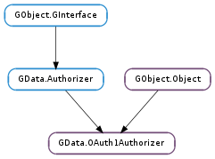

| static | new(application_name, service_type) |
| static | new_for_authorization_domains(application_name, authorization_domains) |
| get_application_name() | |
| get_locale() | |
| get_proxy_uri() | |
| get_timeout() | |
| request_authentication_uri(cancellable) | |
| request_authentication_uri_async(cancellable, callback, *user_data) | |
| request_authentication_uri_finish(async_result) | |
| request_authorization(token, token_secret, verifier, cancellable) | |
| request_authorization_async(token, token_secret, verifier, cancellable, callback, *user_data) | |
| request_authorization_finish(async_result) | |
| set_locale(locale) | |
| set_proxy_uri(proxy_uri) | |
| set_timeout(timeout) |
| Name | Type | Flags | Description |
|---|---|---|---|
| application-name | str | r/w/c | The human-readable, translated application name for the client. |
| locale | str | r/w | The locale to use for network requests, in Unix locale format. |
| proxy-uri | Soup.URI | r/w | The proxy URI used internally for all network requests. |
| timeout | int | r/w | A timeout, in seconds, for network operations. |
None
| Name | Type | Access |
|---|---|---|
| parent | GObject.Object | r |
Bases: GObject.Object, GData.Authorizer
All the fields in the GData.OAuth1Authorizer structure are private and should never be accessed directly.
| Parameters: |
|
|---|---|
| Returns: | a new GData.OAuth1Authorizer ; unref with GObject.Object.unref () |
| Return type: |
Creates a new GData.OAuth1Authorizer.
The GData.AuthorizationDomain s for the given service_type (i.e. as returned by GData.Service.get_authorization_domains ()) are the ones the user will be requested to authorize access to on the page at the URI returned by GData.OAuth1Authorizer.request_authentication_uri ().
The given application_name will set the value of GData.OAuth1Authorizer :application-name and will be displayed to the user on authentication pages returned by Google. If None is provided, the value of GLib.get_application_name () will be used as a fallback.
| Parameters: |
|
|---|---|
| Returns: | a new GData.OAuth1Authorizer ; unref with GObject.Object.unref () |
| Return type: |
Creates a new GData.OAuth1Authorizer. This function is intended to be used only when the default authorization domain list for a single GData.Service, as used by GData.OAuth1Authorizer.new (), isn’t suitable. For example, this could be because the GData.OAuth1Authorizer will be used with multiple GData.Service subclasses, or because the client requires a specific set of authorization domains.
The specified GData.AuthorizationDomain s are the ones the user will be requested to authorize access to on the page at the URI returned by GData.OAuth1Authorizer.request_authentication_uri ().
The given application_name will set the value of GData.OAuth1Authorizer :application-name and will be displayed to the user on authentication pages returned by Google. If None is provided, the value of GLib.get_application_name () will be used as a fallback.
| Returns: | the application name, or None if one isn’t set |
|---|---|
| Return type: | str |
Returns the application name being used on the authentication page at the URI returned by GData.OAuth1Authorizer.request_authentication_uri (); i.e. the value of GData.OAuth1Authorizer :application-name.
| Returns: | the current locale |
|---|---|
| Return type: | str |
Returns the locale currently being used for network requests, or None if the locale is the default.
| Returns: | the proxy URI, or None ; free with Soup.URI.free () |
|---|---|
| Return type: | Soup.URI |
Gets the proxy URI on the GData.OAuth1Authorizer ‘s Soup.Session.
| Returns: | the timeout, or 0 |
|---|---|
| Return type: | int |
Gets the GData.OAuth1Authorizer :timeout property; the network timeout, in seconds.
| Parameters: | cancellable (Gio.Cancellable or None) – optional Gio.Cancellable object, or None |
|---|---|
| Raises: | GLib.GError |
| Returns: | the URI of an authentication page for the user to use; free with GLib.free () |
| Return type: | str, token: str, token_secret: str |
Requests a fresh unauthenticated token from the Google accounts service and builds and returns the URI of an authentication page for that token. This should then be presented to the user (e.g. in an embedded or stand alone web browser). The authentication page will ask the user to log in using their Google account, then ask them to grant access to the GData.AuthorizationDomain s passed to the constructor of the GData.OAuth1Authorizer. If the user grants access, they will be given a verifier, which can then be passed to GData.OAuth1Authorizer.request_authorization () (along with the token and token_secret values returned by this method) to authorize the token.
This method can fail if the server returns an error, but this is unlikely. If it does happen, a GData.ServiceError.PROTOCOL_ERROR will be raised, token and token_secret will be set to None and None will be returned.
This method implements Section 2.1 and Section 2.2 of the OAuth 1.0 protocol.
When freeing token_secret, it’s advisable to set it to all zeros first, to reduce the chance of the sensitive token being recoverable from the free memory pool and (accidentally) leaked by a different part of the process. This can be achieved with the following code:
if (token_secret != NULL) {
memset (token_secret, 0, strlen (token_secret));
g_free (token_secret);
}
| Parameters: |
|
|---|
Requests a fresh unauthenticated token from the Google accounts service and builds and returns the URI of an authentication page for that token. self is reffed when this method is called, so can safely be unreffed after this method returns.
For more details, see GData.OAuth1Authorizer.request_authentication_uri (), which is the synchronous version of this method.
When the operation is finished, callback will be called. You can then call GData.OAuth1Authorizer.request_authentication_uri_finish () to get the results of the operation.
| Parameters: | async_result (Gio.AsyncResult) – a Gio.AsyncResult |
|---|---|
| Raises: | GLib.GError |
| Returns: | the URI of an authentication page for the user to use; free with GLib.free () |
| Return type: | str, token: str, token_secret: str |
Finishes an asynchronous authentication URI building operation started with GData.OAuth1Authorizer.request_authentication_uri_async ().
This method can fail if the server has returned an error, but this is unlikely. If it does happen, a GData.ServiceError.PROTOCOL_ERROR will be raised, token and token_secret will be set to None and None will be returned.
When freeing token_secret, it’s advisable to set it to all zeros first, to reduce the chance of the sensitive token being recoverable from the free memory pool and (accidentally) leaked by a different part of the process. This can be achieved with the following code:
if (token_secret != NULL) {
memset (token_secret, 0, strlen (token_secret));
g_free (token_secret);
}
| Parameters: |
|
|---|---|
| Raises: | |
| Returns: | |
| Return type: |
Requests authorization of the given request token from the Google accounts service using the given verifier as entered by the user from the authentication page at the URI returned by GData.OAuth1Authorizer.request_authentication_uri (). token and token_secret must be the same values as were returned by GData.OAuth1Authorizer.request_authentication_uri () if it was successful.
If the verifier is valid (i.e. the user granted access to the application and the Google accounts service has no reason to distrust the client), True will be returned and any operations performed from that point onwards on GData.Service s using this GData.Authorizer will be authorized.
If the user denies access to the application or the Google accounts service distrusts it, a bogus verifier could be returned. In this case, False will be returned and a GData.ServiceError.FORBIDDEN error will be raised.
Note that if the user denies access to the application, it may be the case that they have no verifier to enter. In this case, the client can simply not call this method. The GData.OAuth1Authorizer stores no state for authentication operations which have succeeded in calling GData.OAuth1Authorizer.request_authentication_uri () but not yet successfully called GData.OAuth1Authorizer.request_authorization ().
This method implements Section 2.3 of the OAuth 1.0 protocol.
| Parameters: |
|
|---|
Requests authorization of the given request token from the Google accounts service using the given verifier as entered by the user. self, token, token_secret and verifier are reffed/copied when this method is called, so can safely be freed after this method returns.
For more details, see GData.OAuth1Authorizer.request_authorization (), which is the synchronous version of this method.
When the operation is finished, callback will be called. You can then call GData.OAuth1Authorizer.request_authorization_finish () to get the results of the operation.
| Parameters: | async_result (Gio.AsyncResult) – a Gio.AsyncResult |
|---|---|
| Raises: | GLib.GError |
| Returns: | True if authorization was successful, False otherwise |
| Return type: | bool |
Finishes an asynchronous authorization operation started with GData.OAuth1Authorizer.request_authorization_async ().
| Parameters: | locale (str or None) – the new locale in Unix locale format, or None for the default locale |
|---|
Set the locale used for network requests to locale, given in standard Unix locale format. See GData.OAuth1Authorizer :locale for more details.
Note that while it’s possible to change the locale after sending network requests (i.e. calling GData.OAuth1Authorizer.request_authentication_uri () for the first time), it is unsupported, as the server-side software may behave unexpectedly. The only supported use of this method is after creation of the authorizer, but before any network requests are made.
| Parameters: | proxy_uri (Soup.URI or None) – the proxy URI, or None |
|---|
Sets the proxy URI on the Soup.Session used internally by the GData.OAuth1Authorizer. This forces all requests through the given proxy.
If proxy_uri is None, no proxy will be used.
| Parameters: | timeout (int) – the timeout, or 0 |
|---|
Sets the GData.OAuth1Authorizer :timeout property; the network timeout, in seconds.
If timeout is 0, network operations will never time out.